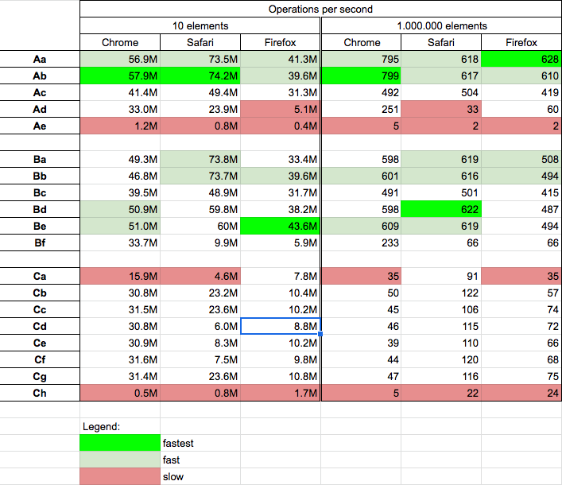

How can I loop through all the entries in an array using JavaScript?
| Use for...of loop. See w3schools.com/JS/js_loop_forof.asp - user19690494 25 Aug 2022 at 15:28 | |
| Near duplicate of (but slightly more general than) "Loop through an array in JavaScript". - outis 17 Oct 2022 at 02:15 |
TL;DR
Your best bets are usually
for-of loop (ES2015+ only; spec | MDN) - simple and async-friendly
for (const element of theArray) {
// ...use `element`...
}
forEach (ES5+ only; spec | MDN) (or its relatives some and such) - not async-friendly (but see details)
theArray.forEach(element => {
// ...use `element`...
});
for loop - async-friendly
for (let index = 0; index < theArray.length; ++index) {
const element = theArray[index];
// ...use `element`...
}
for-in with safeguards - async-friendly
for (const propertyName in theArray) {
if (/*...is an array element property (see below)...*/) {
const element = theArray[propertyName];
// ...use `element`...
}
}
Some quick "don't"s:
for-in unless you use it with safeguards or are at least aware of why it might bite you.map if you're not using its return value.map [spec / MDN] as though it were forEach — but as I write on my blog, that's not what it's for. If you aren't using the array it creates, don't use map.)forEach if the callback does asynchronous work and you want the forEach to wait until that work is done (because it won't).But there's lots more to explore, read on...
JavaScript has powerful semantics for looping through arrays and array-like objects. I've split the answer into two parts: Options for genuine arrays, and options for things that are just array-like, such as the arguments object, other iterable objects (ES2015+), DOM collections, and so on.
Okay, let's look at our options:
You have five options (two supported basically forever, another added by ECMAScript 5 ["ES5"], and two more added in ECMAScript 2015 ("ES2015", aka "ES6"):
for-of (use an iterator implicitly) (ES2015+)forEach and related (ES5+)for loopfor-in correctly(You can see those old specs here: ES5, ES2015, but both have been superceded; the current editor's draft is always here.)
Details:
for-of (use an iterator implicitly) (ES2015+)ES2015 added iterators and iterables to JavaScript. Arrays are iterable (so are strings, Maps, and Sets, as well as DOM collections and lists, as you'll see later). Iterable objects provide iterators for their values. The new for-of statement loops through the values returned by an iterator:
const a = ["a", "b", "c"];
for (const element of a) { // You can use `let` instead of `const` if you like
console.log(element);
}
// a
// b
// cIt doesn't get simpler than that! Under the covers, that gets an iterator from the array and loops through the values the iterator returns. The iterator provided by arrays provides the values of the array elements, in order beginning to end.
Notice how element is scoped to each loop iteration; trying to use element after the end of the loop would fail because it doesn't exist outside the loop body.
In theory, a for-of loop involves several function calls (one to get the iterator, then one to get each value from it). Even when that's true, it's nothing to worry about, function calls are very cheap in modern JavaScript engines (it bothered me for forEach [below] until I looked into it; details). But additionally, JavaScript engines optimize those calls away (in performance-critical code) when dealing with native iterators for things like arrays.
for-of is entirely async-friendly. If you need the work in a loop body to be done in series (not in parallel), an await in the loop body will wait for the promise to settle before continuing. Here's a silly example:
function delay(ms) {
return new Promise(resolve => {
setTimeout(resolve, ms);
});
}
async function showSlowly(messages) {
for (const message of messages) {
await delay(400);
console.log(message);
}
}
showSlowly([
"So", "long", "and", "thanks", "for", "all", "the", "fish!"
]);
// `.catch` omitted because we know it never rejectsNote how the words appear with a delay before each one.
It's a matter of coding style, but for-of is the first thing I reach for when looping through anything iterable.
forEach and relatedIn any even vaguely-modern environment (so, not IE8) where you have access to the Array features added by ES5, you can use forEach (spec | MDN) if you're only dealing with synchronous code (or you don't need to wait for an asynchronous process to finish during the loop):
const a = ["a", "b", "c"];
a.forEach((element) => {
console.log(element);
});forEach accepts a callback function and, optionally, a value to use as this when calling that callback (not used above). The callback is called for each element in the array, in order, skipping non-existent elements in sparse arrays. Although I only used one parameter above, the callback is called with three arguments: The element for that iteration, the index of that element, and a reference to the array you're iterating over (in case your function doesn't already have it handy).
Like for-of, forEach has the advantage that you don't have to declare indexing and value variables in the containing scope; in this case, they're supplied as arguments to the iteration function, and so nicely scoped to just that iteration.
Unlike for-of, forEach has the disadvantage that it doesn't understand async functions and await. If you use an async function as the callback, forEach does not wait for that function's promise to settle before continuing. Here's the async example from for-of using forEach instead — notice how there's an initial delay, but then all the text appears right away instead of waiting:
function delay(ms) {
return new Promise(resolve => {
setTimeout(resolve, ms);
});
}
async function showSlowly(messages) {
// INCORRECT, doesn't wait before continuing,
// doesn't handle promise rejections
messages.forEach(async message => {
await delay(400);
console.log(message);
});
}
showSlowly([
"So", "long", "and", "thanks", "for", "all", "the", "fish!"
]);
// `.catch` omitted because we know it never rejectsforEach is the "loop through them all" function, but ES5 defined several other useful "work your way through the array and do things" functions, including:
every (spec | MDN) - stops looping the first time the callback returns a falsy valuesome (spec | MDN) - stops looping the first time the callback returns a truthy valuefilter (spec | MDN) - creates a new array including elements where the callback returns a truthy value, omitting the ones where it doesn'tmap (spec | MDN) - creates a new array from the values returned by the callbackreduce (spec | MDN) - builds up a value by repeatedly calling the callback, passing in previous values; see the spec for the detailsreduceRight (spec | MDN) - like reduce, but works in descending rather than ascending orderAs with forEach, if you use an async function as your callback, none of those waits for the function's promise to settle. That means:
async function callback is never appropriate with every, some, and filter since they will treat the returned promise as though it were a truthy value; they don't wait for the promise to settle and then use the fulfillment value.async function callback is often appropriate with map, if the goal is to turn an array of something into an array of promises, perhaps for passing to one of the promise combinator functions (Promise.all, Promise.race, promise.allSettled, or Promise.any).async function callback is rarely appropriate with reduce or reduceRight, because (again) the callback will always return a promise. But there is an idiom of building a chain of promises from an array that uses reduce (const promise = array.reduce((p, element) => p.then(/*...something using `element`...*/));), but usually in those cases a for-of or for loop in an async function will be clearer and easier to debug.for loopSometimes the old ways are the best:
const a = ["a", "b", "c"];
for (let index = 0; index < a.length; ++index) {
const element = a[index];
console.log(element);
}If the length of the array won't change during the loop, and it's in highly performance-sensitive code, a slightly more complicated version grabbing the length up front might be a tiny bit faster:
const a = ["a", "b", "c"];
for (let index = 0, len = a.length; index < len; ++index) {
const element = a[index];
console.log(element);
}And/or counting backward:
const a = ["a", "b", "c"];
for (let index = a.length - 1; index >= 0; --index) {
const element = a[index];
console.log(element);
}But with modern JavaScript engines, it's rare you need to eke out that last bit of juice.
Before ES2015, the loop variable had to exist in the containing scope, because var only has function-level scope, not block-level scope. But as you saw in the examples above, you can use let within the for to scope the variables to just the loop. And when you do that, the index variable is recreated for each loop iteration, meaning closures created in the loop body keep a reference to the index for that specific iteration, which solves the old "closures in loops" problem:
// (The `NodeList` from `querySelectorAll` is array-like)
const divs = document.querySelectorAll("div");
for (let index = 0; index < divs.length; ++index) {
divs[index].addEventListener('click', e => {
console.log("Index is: " + index);
});
}<div>zero</div>
<div>one</div>
<div>two</div>
<div>three</div>
<div>four</div>In the above, you get "Index is: 0" if you click the first and "Index is: 4" if you click the last. This does not work if you use var instead of let (you'd always see "Index is: 5").
Like for-of, for loops work well in async functions. Here's the earlier example using a for loop:
function delay(ms) {
return new Promise(resolve => {
setTimeout(resolve, ms);
});
}
async function showSlowly(messages) {
for (let i = 0; i < messages.length; ++i) {
const message = messages[i];
await delay(400);
console.log(message);
}
}
showSlowly([
"So", "long", "and", "thanks", "for", "all", "the", "fish!"
]);
// `.catch` omitted because we know it never rejectsfor-in correctlyfor-in isn't for looping through arrays, it's for looping through the names of an object's properties. It does often seem to work for looping through arrays as a by-product of the fact that arrays are objects, but it doesn't just loop through the array indexes, it loops through all enumerable properties of the object (including inherited ones). (It also used to be that the order wasn't specified; it is now [details in this other answer], but even though the order is specified now, the rules are complex, there are exceptions, and relying on the order is not best practice.)
The only real use cases for for-in on an array are:
Looking only at that first example: You can use for-in to visit those sparse array elements if you use appropriate safeguards:
// `a` is a sparse array
const a = [];
a[0] = "a";
a[10] = "b";
a[10000] = "c";
for (const name in a) {
if (Object.hasOwn(a, name) && // These checks are
/^0$|^[1-9]\d*$/.test(name) && // explained
name <= 4294967294 // below
) {
const element = a[name];
console.log(a[name]);
}
}Note the three checks:
That the object has its own property by that name (not one it inherits from its prototype; this check is also often written as a.hasOwnProperty(name) but ES2022 adds Object.hasOwn which can be more reliable), and
That the name is all decimal digits (e.g., normal string form, not scientific notation), and
That the name's value when coerced to a number is <= 2^32 - 2 (which is 4,294,967,294). Where does that number come from? It's part of the definition of an array index in the specification. Other numbers (non-integers, negative numbers, numbers greater than 2^32 - 2) are not array indexes. The reason it's 2^32 - 2 is that that makes the greatest index value one lower than 2^32 - 1, which is the maximum value an array's length can have. (E.g., an array's length fits in a 32-bit unsigned integer.)
...although with that said, most code only does the hasOwnProperty check.
You wouldn't do that in inline code, of course. You'd write a utility function. Perhaps:
// Utility function for antiquated environments without `forEach`
const hasOwn = Object.prototype.hasOwnProperty.call.bind(Object.prototype.hasOwnProperty);
const rexNum = /^0$|^[1-9]\d*$/;
function sparseEach(array, callback, thisArg) {
for (const name in array) {
const index = +name;
if (hasOwn(a, name) &&
rexNum.test(name) &&
index <= 4294967294
) {
callback.call(thisArg, array[name], index, array);
}
}
}
const a = [];
a[5] = "five";
a[10] = "ten";
a[100000] = "one hundred thousand";
a.b = "bee";
sparseEach(a, (value, index) => {
console.log("Value at " + index + " is " + value);
});Like for, for-in works well in asynchronous functions if the work within it needs to be done in series.
function delay(ms) {
return new Promise(resolve => {
setTimeout(resolve, ms);
});
}
async function showSlowly(messages) {
for (const name in messages) {
if (messages.hasOwnProperty(name)) { // Almost always this is the only check people do
const message = messages[name];
await delay(400);
console.log(message);
}
}
}
showSlowly([
"So", "long", "and", "thanks", "for", "all", "the", "fish!"
]);
// `.catch` omitted because we know it never rejectsfor-of uses an iterator implicitly, doing all the scut work for you. Sometimes, you might want to use an iterator explicitly. It looks like this:
const a = ["a", "b", "c"];
const it = a.values(); // Or `const it = a[Symbol.iterator]();` if you like
let entry;
while (!(entry = it.next()).done) {
const element = entry.value;
console.log(element);
}An iterator is an object matching the Iterator definition in the specification. Its next method returns a new result object each time you call it. The result object has a property, done, telling us whether it's done, and a property value with the value for that iteration. (done is optional if it would be false, value is optional if it would be undefined.)
What you get for value varies depending on the iterator. On arrays, the default iterator provides the value of each array element ("a", "b", and "c" in the example earlier). Arrays also have three other methods that return iterators:
values(): This is an alias for the [Symbol.iterator] method that returns the default iterator.keys(): Returns an iterator that provides each key (index) in the array. In the example above, it would provide "0", then "1", then "2" (yes, as strings).entries(): Returns an iterator that provides [key, value] arrays.Since iterator objects don't advance until you call next, they work well in async function loops. Here's the earlier for-of example using the iterator explicitly:
function delay(ms) {
return new Promise(resolve => {
setTimeout(resolve, ms);
});
}
async function showSlowly(messages) {
const it = messages.values()
while (!(entry = it.next()).done) {
await delay(400);
const element = entry.value;
console.log(element);
}
}
showSlowly([
"So", "long", "and", "thanks", "for", "all", "the", "fish!"
]);
// `.catch` omitted because we know it never rejectsAside from true arrays, there are also array-like objects that have a length property and properties with all-digits names: NodeList instances, HTMLCollection instances, the arguments object, etc. How do we loop through their contents?
At least some, and possibly most or even all, of the array approaches above apply equally well to array-like objects:
Use for-of (use an iterator implicitly) (ES2015+)
for-of uses the iterator provided by the object (if any). That includes host-provided objects (like DOM collections and lists). For instance, HTMLCollection instances from getElementsByXYZ methods and NodeLists instances from querySelectorAll both support iteration. (This is defined quite subtly by the HTML and DOM specifications. Basically, any object with length and indexed access is automatically iterable. It doesn't have to be marked iterable; that is used only for collections that, in addition to being iterable, support forEach, values, keys, and entries methods. NodeList does; HTMLCollection doesn't, but both are iterable.)
Here's an example of looping through div elements:
const divs = document.querySelectorAll("div");
for (const div of divs) {
div.textContent = Math.random();
}<div>zero</div>
<div>one</div>
<div>two</div>
<div>three</div>
<div>four</div>Use forEach and related (ES5+)
The various functions on Array.prototype are "intentionally generic" and can be used on array-like objects via Function#call (spec | MDN) or Function#apply (spec | MDN). (If you have to deal with IE8 or earlier [ouch], see the "Caveat for host-provided objects" at the end of this answer, but it's not an issue with vaguely-modern browsers.)
Suppose you wanted to use forEach on a Node's childNodes collection (which, being an HTMLCollection, doesn't have forEach natively). You'd do this:
Array.prototype.forEach.call(node.childNodes, (child) => {
// Do something with `child`
});
(Note, though, that you could just use for-of on node.childNodes.)
If you're going to do that a lot, you might want to grab a copy of the function reference into a variable for reuse, e.g.:
// (This is all presumably in a module or some scoping function)
const forEach = Array.prototype.forEach.call.bind(Array.prototype.forEach);
// Then later...
forEach(node.childNodes, (child) => {
// Do something with `child`
});
Use a simple for loop
Perhaps obviously, a simple for loop works for array-like objects.
Use an iterator explicitly (ES2015+)
See #1.
You may be able to get away with for-in (with safeguards), but with all of these more appropriate options, there's no reason to try.
Other times, you may want to convert an array-like object into a true array. Doing that is surprisingly easy:
Use Array.from
Array.from (spec) | (MDN) (ES2015+, but easily polyfilled) creates an array from an array-like object, optionally passing the entries through a mapping function first. So:
const divs = Array.from(document.querySelectorAll("div"));
...takes the NodeList from querySelectorAll and makes an array from it.
The mapping function is handy if you were going to map the contents in some way. For instance, if you wanted to get an array of the tag names of the elements with a given class:
// Typical use (with an arrow function):
const divs = Array.from(document.querySelectorAll(".some-class"), element => element.tagName);
// Traditional function (since `Array.from` can be polyfilled):
var divs = Array.from(document.querySelectorAll(".some-class"), function(element) {
return element.tagName;
});
Use spread syntax (...)
It's also possible to use ES2015's spread syntax. Like for-of, this uses the iterator provided by the object (see #1 in the previous section):
const trueArray = [...iterableObject];
So for instance, if we want to convert a NodeList into a true array, with spread syntax this becomes quite succinct:
const divs = [...document.querySelectorAll("div")];
Use the slice method of arrays
We can use the slice method of arrays, which like the other methods mentioned above is "intentionally generic" and so can be used with array-like objects, like this:
const trueArray = Array.prototype.slice.call(arrayLikeObject);
So for instance, if we want to convert a NodeList into a true array, we could do this:
const divs = Array.prototype.slice.call(document.querySelectorAll("div"));
(If you still have to handle IE8 [ouch], will fail; IE8 didn't let you use host-provided objects as this like that.)
If you use Array.prototype functions with host-provided array-like objects (for example, DOM collections and such provided by the browser rather than the JavaScript engine), obsolete browsers like IE8 didn't necessarily handle that way, so if you have to support them, be sure to test in your target environments. But it's not an issue with vaguely-modern browsers. (For non-browser environments, naturally it'll depend on the environment.)
| What do you mean by non-element properties? - Aalexander 9 Dec 2020 at 13:08 | |
| 3 | @Alex - Properties on the array that don't represent array elements. For example: const a = ["a", "b"]; a.example = 42; That array has three properties (other than the ones all arrays have), whose names are the strings "0", "1", and "example". The property named "example" is a non-element property. The other two are element properties, because they represent the elements of the array. - T.J. Crowder 9 Dec 2020 at 13:18 |
| None of these options address traversing associative arrays in which the index names are just as important as the values. - Peter Kionga-Kamau 14 Oct 2021 at 10:29 | |
@PeterKionga-Kamau - JavaScript doesn't have associative arrays. But re indexes, three of the TL;DR "best bets" provide them: forEach, a simple old-fashioned for loop, and for-in with safeguards. - T.J. Crowder 14 Oct 2021 at 10:36 |
|
| Wow, @captain-yossarian, that was generous! Not sure what prompted it, and it wasn't necessary (the answer's more than done enough for my rep, and I have the luxury of having enough rep not to care about it anymore), but it was a kind thing to do, thanks! - T.J. Crowder 9 Nov 2021 at 10:08 | |
@T.J.Crowder sure it does var arr = new Array(); arr = {"test":"testval", "test2":"test2val"}; - Peter Kionga-Kamau 16 Nov 2021 at 12:31 |
|
| 1 | @PeterKionga-Kamau - That's not an associative array, it's an object. The array you're creating in var arr = new Array(); is thrown away and replaced by the object you're creating in arr = {"test":"testval", "test2":"test2val"};. That code should be just var arr = {"test":"testval", "test2":"test2val"}; (well, not var, but let or const). Granted, by some definitions objects might be considered associative arrays, but by others they aren't and I avoid the term in JS because it has specific meaning in PHP, which is JavaScript-adjacent due to their both being used a lot in web work. - T.J. Crowder 16 Nov 2021 at 12:36 |
| @T.J.Crowder so pedanticism aside, still unclear how to access the index of an associative object - Peter Kionga-Kamau 16 Nov 2021 at 12:43 | |
| 1 | @PeterKionga-Kamau - The question and answer are about arrays, not (other) objects. But: Object properties don't have indexes, so objects don't have indexed access; instead they have keyed access (theObject.propName, theObject["propName"], theObject[propKeySymbol], etc.). The concept of indexed access isn't useful with regard to objects. It's very indirectly possible, though. 🙂 Object properties do have an order now (ES2015+, with tweaks in a couple of later specs), but the order is complicated, and it depends on the order of property creation, the type of the property key, ... - T.J. Crowder 16 Nov 2021 at 14:26 |
| 1 | ...the value (!) of the property key if it's a string, and whether the property is inherited or "own," so it's poor practice to rely on property order. If one wanted to do it anyway, there's no one operation that provides all of the property keys in order, but Reflect.ownKeys provides an array of the object's own property keys in order (skipping inherited ones). So if that suits the use case, you can get an array from that (const keys = Reflect.ownKeys(theObject);). ... - T.J. Crowder 16 Nov 2021 at 14:26 |
| 1 | ... Then "indexed" access would be indexing into that array for the key, then getting the value from the object using the key: theObject[keys[index]]. I can't imagine a use case for it, though. If you want all of the object's properties (inherited + own), it's more complicated, you have to loop up through the prototype chain appending properties you haven't seen yet (Set is probably useful there, because Set is strictly ordered by value insertion and doesn't allow duplication): ... - T.J. Crowder 16 Nov 2021 at 14:26 |
| 2 | ... let keys = []; for (let obj = theObject; obj; obj = Object.getPrototypeOf(obj)) { keys.push(...Reflect.ownKeys(obj)); } keys = [...new Set(keys)]; That works because inherited properties that haven't been shadowed by own properties appear after own properties in the defined order; so we build an array containing the own properties of the target object, then the own properties of its prototype, then its prototype, etc. That array will have duplicates if both an object and one of its prototypes have a property, but the "own" one will come first in the array; when we... - T.J. Crowder 16 Nov 2021 at 14:26 |
| 1 | ...pass it through Set, those earlier ones "win" in the order of the resulting Set and later ones are dropped, as per spec (details here). Hope that helps! 🙂 - T.J. Crowder 16 Nov 2021 at 14:27 |
| 1 | @PeterKionga-Kamau - Very belatedly I realize you might find this useful: stackoverflow.com/questions/684672/… - T.J. Crowder 16 Nov 2021 at 14:33 |
| is the map better than forEach - Houssem TRABELSI 23 Dec 2021 at 16:53 | |
| 1 | @HoussemTRABELSI - No, they're just different, they serve different purposes. map is for when you want to create a new array from the elements of the original array (one for one), for instance if you had an array of strings (["a", "b", "c"]) and you wanted to get an array of those same strings capitalized (["A", "B", "C"]), map` would be the right tool to use. If you don't want to create a new array, map is not the right tool. More in my blog post here. - T.J. Crowder 24 Dec 2021 at 14:30 |
Why do I need to declare the element? Why for (Array(10) { console.log('1'); } does not work. Nor Array(10).forEach(()=> console.log('1'))... - Fred Guth 8 Jul 2022 at 13:02 |
|
| 1 | @FredGuth - That first is invalid syntax. The second doesn't (seem to) do anything because forEach doesn't visit holes in sparse arrays. Array(10) creates an empty array with a length of 10. So it's a sparse array that only has holes, no elements, so there's nothing for forEach to visit. (I mention this only very briefly in passing in the answer above: "The callback is called for each element in the array, in order, skipping non-existent elements in sparse arrays.") Other mechanisms may handle holes differently. For instance, for-of will act like holes are elements with ... - T.J. Crowder 8 Jul 2022 at 13:25 |
... undefined in them, as will Array.from. For instance, Array.from({length:10}, () => { console.log(1); }); will log 1 ten times in the process of creating a non-sparse array. - T.J. Crowder 8 Jul 2022 at 13:27 |
Note: This answer is hopelessly out-of-date. For a more modern approach, look at the methods available on an array. Methods of interest might be:
The standard way to iterate an array in JavaScript is a vanilla for-loop:
var length = arr.length,
element = null;
for (var i = 0; i < length; i++) {
element = arr[i];
// Do something with element
}
Note, however, that this approach is only good if you have a dense array, and each index is occupied by an element. If the array is sparse, then you can run into performance problems with this approach, since you will iterate over a lot of indices that do not really exist in the array. In this case, a for .. in-loop might be a better idea. However, you must use the appropriate safeguards to ensure that only the desired properties of the array (that is, the array elements) are acted upon, since the for..in-loop will also be enumerated in legacy browsers, or if the additional properties are defined as enumerable.
In ECMAScript 5 there will be a forEach method on the array prototype, but it is not supported in legacy browsers. So to be able to use it consistently you must either have an environment that supports it (for example, Node.js for server side JavaScript), or use a "Polyfill". The Polyfill for this functionality is, however, trivial and since it makes the code easier to read, it is a good polyfill to include.
Is there a way to do it in just one line of code. For example in facebook I like to speed up videos with document.getElementsByTagName("video")[28].playbackRate = 2.2. If I could easily map across all elements then I could avoid having to identify which video (e.g. index 28 in this case). Any ideas? - stevec 5 Sep 2020 at 19:39 |
|
| 3 | @stevec: Array.from(document.querySelectorAll('video')).forEach(video => video.playbackRate = 2.2); - PatrikAkerstrand 14 Sep 2020 at 06:24 |
Your link to the methods available on an array doesn't provide anything for .zip - how does it work? Analogous to Python? - Cadoiz 22 May 2023 at 12:37 |
If you’re using the jQuery library, you can use jQuery.each:
$.each(yourArray, function(index, value) {
// do your stuff here
});
EDIT :
As per question, user want code in javascript instead of jquery so the edit is
var length = yourArray.length;
for (var i = 0; i < length; i++) {
// Do something with yourArray[i].
}
I think the reverse for loop deserves a mention here:
for (var i = array.length; i--; ) {
// process array[i]
}
len variable, or compare against array.length on each iteration, either of which might be a minute optimisation.array[i]), then a forward loop would skip the item that shifted left into position i, or re-process the ith item that was shifted right. In a traditional for loop, you could update i to point to the next item that needs processing - 1, but simply reversing the direction of iteration is often a simpler and more elegant solution.forEach() and to ES6's for ... of.Some developers use the reverse for loop by default, unless there is a good reason to loop forwards.
Although the performance gains are usually insignificant, it sort of screams:
"Just do this to every item in the list, I don't care about the order!"
However in practice that is not actually a reliable indication of intent, since it is indistinguishable from those occasions when you do care about the order, and really do need to loop in reverse. So in fact another construct would be needed to accurately express the "don't care" intent, something currently unavailable in most languages, including ECMAScript, but which could be called, for example, forEachUnordered().
If order doesn't matter, and efficiency is a concern (in the innermost loop of a game or animation engine), then it may be acceptable to use the reverse for loop as your go-to pattern. Just remember that seeing a reverse for loop in existing code does not necessarily mean that the order irrelevant!
In general for higher level code where clarity and safety are greater concerns, I previously recommended using Array::forEach as your default pattern for looping (although these days I prefer to use for..of). Reasons to prefer forEach over a reverse loop are:
for and while loops).Then when you do see the reverse for loop in your code, that is a hint that it is reversed for a good reason (perhaps one of the reasons described above). And seeing a traditional forward for loop may indicate that shifting can take place.
(If the discussion of intent makes no sense to you, then you and your code may benefit from watching Crockford's lecture on Programming Style & Your Brain.)
There is a debate about whether for..of or forEach() are preferable:
For maximum browser support, for..of requires a polyfill for iterators, making your app slightly slower to execute and slightly larger to download.
For that reason (and to encourage use of map and filter), some front-end style guides ban for..of completely!
But the above concerns is not applicable to Node.js applications, where for..of is now well supported.
And furthermore await does not work inside forEach(). Using for..of is the clearest pattern in this case.
Personally, I tend to use whatever looks easiest to read, unless performance or minification has become a major concern. So these days I prefer to use for..of instead of forEach(), but I will always use map or filter or find or some when applicable. (For the sake of my colleagues, I rarely use reduce.)
for (var i = 0; i < array.length; i++) { ... } // Forwards
for (var i = array.length; i--; ) { ... } // Reverse
You will notice that i-- is the middle clause (where we usually see a comparison) and the last clause is empty (where we usually see i++). That means that i-- is also used as the condition for continuation. Crucially, it is executed and checked before each iteration.
How can it start at array.length without exploding?
Because i-- runs before each iteration, on the first iteration we will actually be accessing the item at array.length - 1 which avoids any issues with Array-out-of-bounds undefined items.
Why doesn't it stop iterating before index 0?
The loop will stop iterating when the condition i-- evaluates to a falsey value (when it yields 0).
The trick is that unlike --i, the trailing i-- operator decrements i but yields the value before the decrement. Your console can demonstrate this:
> var i = 5; [i, i--, i];
[5, 5, 4]
So on the final iteration, i was previously 1 and the i-- expression changes it to 0 but actually yields 1 (truthy), and so the condition passes. On the next iteration i-- changes i to -1 but yields 0 (falsey), causing execution to immediately drop out of the bottom of the loop.
In the traditional forwards for loop, i++ and ++i are interchangeable (as Douglas Crockford points out). However in the reverse for loop, because our decrement is also our condition expression, we must stick with i-- if we want to process the item at index 0.
Some people like to draw a little arrow in the reverse for loop, and end with a wink:
for (var i = array.length; i --> 0 ;) {
Credits go to WYL for showing me the benefits and horrors of the reverse for loop.
Some C-style languages use foreach to loop through enumerations. In JavaScript this is done with the for..in loop structure:
var index,
value;
for (index in obj) {
value = obj[index];
}
There is a catch. for..in will loop through each of the object's enumerable members, and the members on its prototype. To avoid reading values that are inherited through the object's prototype, simply check if the property belongs to the object:
for (i in obj) {
if (obj.hasOwnProperty(i)) {
//do stuff
}
}
Additionally, ECMAScript 5 has added a forEach method to Array.prototype which can be used to enumerate over an array using a calback (the polyfill is in the docs so you can still use it for older browsers):
arr.forEach(function (val, index, theArray) {
//do stuff
});
It's important to note that Array.prototype.forEach doesn't break when the callback returns false. jQuery and Underscore.js provide their own variations on each to provide loops that can be short-circuited.
const fruits = ['🍎', '🍋', '🍌' ]
👉🏽 for...of
for (const fruit of fruits) {
console.log(fruit) // '🍎', '🍋', '🍌'
}
👉🏽 forEach
fruits.forEach(fruit => {
console.log(fruit) // '🍎', '🍋', '🍌'
})
👉🏽 map
*Different from the two above, map() creates a new array and expects you to return something after each iteration.
fruits.map(fruit => fruit) // ['🍎', '🍋', '🍌' ]
🛑 Important: As map() is meant to return a value at each iteration, it is an ideal method for transforming elements in arrays:
fruits.map(fruit => 'cool ' + fruit) // ['cool 🍎', 'cool 🍋', 'cool 🍌' ]
On the other hand, for...of and forEach( ) don't need to return anything and that's why we typically use them to perform logic tasks that manipulate stuff outside.
So to speak, you're going to find if () statements, side effects, and logging activities in these two.
👌🏾 TIP: you can also have the index (as well as the whole array) in each iteration in your .map() or .forEach() functions.
Just pass additional arguments to them:
fruits.map((fruit, i) => i + ' ' + fruit)
// ['0 🍎', '1 🍋', '2 🍌' ]
fruits.forEach((f, i, arr) => {
console.log( f + ' ' + i + ' ' + arr )
})
// 🍎 0 🍎, 🍋, 🍌,
// 🍋 1 🍎, 🍋, 🍌,
// 🍌 2 🍎, 🍋, 🍌,
If you want to loop over an array, use the standard three-part for loop.
for (var i = 0; i < myArray.length; i++) {
var arrayItem = myArray[i];
}
You can get some performance optimisations by caching myArray.length or iterating over it backwards.
If you don't mind emptying the array:
var x;
while(x = y.pop()){
alert(x); //do something
}
x will contain the last value of y and it will be removed from the array. You can also use shift() which will give and remove the first item from y.
A forEach implementation (see in jsFiddle):
function forEach(list,callback) {
var length = list.length;
for (var n = 0; n < length; n++) {
callback.call(list[n]);
}
}
var myArray = ['hello','world'];
forEach(
myArray,
function(){
alert(this); // do something
}
);
I know this is an old post, and there are so many great answers already. For a little more completeness I figured I'd throw in another one using AngularJS. Of course, this only applies if you're using Angular, obviously, nonetheless I'd like to put it anyway.
angular.forEach takes 2 arguments and an optional third argument. The first argument is the object (array) to iterate over, the second argument is the iterator function, and the optional third argument is the object context (basically referred to inside the loop as 'this'.
There are different ways to use the forEach loop of angular. The simplest and probably most used is
var temp = [1, 2, 3];
angular.forEach(temp, function(item) {
//item will be each element in the array
//do something
});
Another way that is useful for copying items from one array to another is
var temp = [1, 2, 3];
var temp2 = [];
angular.forEach(temp, function(item) {
this.push(item); //"this" refers to the array passed into the optional third parameter so, in this case, temp2.
}, temp2);
Though, you don't have to do that, you can simply do the following and it's equivalent to the previous example:
angular.forEach(temp, function(item) {
temp2.push(item);
});
Now there are pros and cons of using the angular.forEach function as opposed to the built in vanilla-flavored for loop.
Pros
angular.forEach will use the ES5 forEach loop. Now, I will get to efficientcy in the cons section, as the forEach loops are much slower than the for loops. I mention this as a pro because it's nice to be consistent and standardized.Consider the following 2 nested loops, which do exactly the same thing. Let's say that we have 2 arrays of objects and each object contains an array of results, each of which has a Value property that's a string (or whatever). And let's say we need to iterate over each of the results and if they're equal then perform some action:
angular.forEach(obj1.results, function(result1) {
angular.forEach(obj2.results, function(result2) {
if (result1.Value === result2.Value) {
//do something
}
});
});
//exact same with a for loop
for (var i = 0; i < obj1.results.length; i++) {
for (var j = 0; j < obj2.results.length; j++) {
if (obj1.results[i].Value === obj2.results[j].Value) {
//do something
}
}
}
Granted this is a very simple hypothetical example, but I've written triple embedded for loops using the second approach and it was very hard to read, and write for that matter.
Cons
angular.forEach, and the native forEach, for that matter, are both so much slower than the normal for loop....about 90% slower. So for large data sets, best to stick to the native for loop.continue is actually supported by "accident", to continue in an angular.forEach you simple put a return; statement in the function like angular.forEach(array, function(item) { if (someConditionIsTrue) return; }); which will cause it to continue out of the function for that iteration. This is also due to the fact that the native forEach does not support break or continue either.I'm sure there's various other pros and cons as well, and please feel free to add any that you see fit. I feel that, bottom line, if you need efficiency, stick with just the native for loop for your looping needs. But, if your datasets are smaller and a some efficiency is okay to give up in exchange for readability and writability, then by all means throw an angular.forEach in that bad boy.
As of ECMAScript 6:
list = [0, 1, 2, 3]
for (let obj of list) {
console.log(obj)
}Where of avoids the oddities associated with in and makes it work like the for loop of any other language, and let binds i within the loop as opposed to within the function.
The braces ({}) can be omitted when there is only one command (e.g. in the example above).
Probably the for(i = 0; i < array.length; i++) loop is not the best choice. Why? If you have this:
var array = new Array();
array[1] = "Hello";
array[7] = "World";
array[11] = "!";
The method will call from array[0] to array[2]. First, this will first reference variables you don't even have, second you would not have the variables in the array, and third this will make the code bolder. Look here, it's what I use:
for(var i in array){
var el = array[i];
//If you want 'i' to be INT just put parseInt(i)
//Do something with el
}
And if you want it to be a function, you can do this:
function foreach(array, call){
for(var i in array){
call(array[i]);
}
}
If you want to break, a little more logic:
function foreach(array, call){
for(var i in array){
if(call(array[i]) == false){
break;
}
}
}
Example:
foreach(array, function(el){
if(el != "!"){
console.log(el);
} else {
console.log(el+"!!");
}
});
It returns:
//Hello
//World
//!!!
There are three implementations of foreach in jQuery as follows.
var a = [3,2];
$(a).each(function(){console.log(this.valueOf())}); //Method 1
$.each(a, function(){console.log(this.valueOf())}); //Method 2
$.each($(a), function(){console.log(this.valueOf())}); //Method 3
An easy solution now would be to use the underscore.js library. It's providing many useful tools, such as each and will automatically delegate the job to the native forEach if available.
A CodePen example of how it works is:
var arr = ["elemA", "elemB", "elemC"];
_.each(arr, function(elem, index, ar)
{
...
});
Array.prototype.forEach().for each (variable in object) is deprecated as the part of ECMA-357 (EAX) standard.for (variable of object) as the part of the Harmony (ECMAScript 6) proposal.There isn't any for each loop in native JavaScript. You can either use libraries to get this functionality (I recommend Underscore.js), use a simple for in loop.
for (var instance in objects) {
...
}
However, note that there may be reasons to use an even simpler for loop (see Stack Overflow question Why is using “for…in” with array iteration such a bad idea?)
var instance;
for (var i=0; i < objects.length; i++) {
var instance = objects[i];
...
}
ECMAScript 5 (the version on JavaScript) to work with Arrays:
forEach - Iterates through every item in the array and do whatever you need with each item.
['C', 'D', 'E'].forEach(function(element, index) {
console.log(element + " is #" + (index+1) + " in the musical scale");
});
// Output
// C is the #1 in musical scale
// D is the #2 in musical scale
// E is the #3 in musical scale
In case, more interested on operation on array using some inbuilt feature.
map - It creates a new array with the result of the callback function. This method is good to be used when you need to format the elements of your array.
// Let's upper case the items in the array
['bob', 'joe', 'jen'].map(function(elem) {
return elem.toUpperCase();
});
// Output: ['BOB', 'JOE', 'JEN']
reduce - As the name says, it reduces the array to a single value by calling the given function passing in the current element and the result of the previous execution.
[1,2,3,4].reduce(function(previous, current) {
return previous + current;
});
// Output: 10
// 1st iteration: previous=1, current=2 => result=3
// 2nd iteration: previous=3, current=3 => result=6
// 3rd iteration: previous=6, current=4 => result=10
every - Returns true or false if all the elements in the array pass the test in the callback function.
// Check if everybody has 18 years old of more.
var ages = [30, 43, 18, 5];
ages.every(function(elem) {
return elem >= 18;
});
// Output: false
filter - Very similar to every except that filter returns an array with the elements that return true to the given function.
// Finding the even numbers
[1,2,3,4,5,6].filter(function(elem){
return (elem % 2 == 0)
});
// Output: [2,4,6]
There are a few ways to loop through an array in JavaScript, as below:
for - it's the most common one. Full block of code for looping
var languages = ["Java", "JavaScript", "C#", "Python"];
var i, len, text;
for (i = 0, len = languages.length, text = ""; i < len; i++) {
text += languages[i] + "<br>";
}
document.getElementById("example").innerHTML = text;<p id="example"></p>while - loop while a condition is through. It seems to be the fastest loop
var text = "";
var i = 0;
while (i < 10) {
text += i + ") something<br>";
i++;
}
document.getElementById("example").innerHTML = text;<p id="example"></p>do/while - also loop through a block of code while the condition is true, will run at least one time
var text = ""
var i = 0;
do {
text += i + ") something <br>";
i++;
}
while (i < 10);
document.getElementById("example").innerHTML = text;<p id="example"></p>Functional loops - forEach, map, filter, also reduce (they loop through the function, but they are used if you need to do something with your array, etc.
// For example, in this case we loop through the number and double them up using the map function
var numbers = [65, 44, 12, 4];
document.getElementById("example").innerHTML = numbers.map(function(num){return num * 2});<p id="example"></p>For more information and examples about functional programming on arrays, look at the blog post Functional programming in JavaScript: map, filter and reduce.
This is an iterator for NON-sparse list where the index starts at 0, which is the typical scenario when dealing with document.getElementsByTagName or document.querySelectorAll)
function each( fn, data ) {
if(typeof fn == 'string')
eval('fn = function(data, i){' + fn + '}');
for(var i=0, L=this.length; i < L; i++)
fn.call( this[i], data, i );
return this;
}
Array.prototype.each = each;
Examples of usage:
Example #1
var arr = [];
[1, 2, 3].each( function(a){ a.push( this * this}, arr);
arr = [1, 4, 9]
Example #2
each.call(document.getElementsByTagName('p'), "this.className = data;",'blue');
Each p tag gets class="blue"
Example #3
each.call(document.getElementsByTagName('p'),
"if( i % 2 == 0) this.className = data;",
'red'
);
Every other p tag gets class="red">
Example #4
each.call(document.querySelectorAll('p.blue'),
function(newClass, i) {
if( i < 20 )
this.className = newClass;
}, 'green'
);
And finally the first 20 blue p tags are changed to green
Caution when using string as function: the function is created out-of-context and ought to be used only where you are certain of variable scoping. Otherwise, better to pass functions where scoping is more intuitive.
There's no inbuilt ability to break in forEach. To interrupt execution use the Array#some like below:
[1,2,3].some(function(number) {
return number === 1;
});
This works because some returns true as soon as any of the callbacks, executed in array order, returns true, short-circuiting the execution of the rest. Original Answer see Array prototype for some
for...of where possibleasync/await support |
Skips non-numeric props | Immutable index | |
|---|---|---|---|
for...of |
👍 | 👍 | 👍 |
forEach() |
❌ | 👍 | 👍 |
for...in |
👍 | ❌ | 👍 |
Regular for |
👍 | 👍 | ❌ |
As one can see in the table above, for...of should be used wherever it fits. Since it supports async functions, skips non-numeric properties and prevents messing up the loop by accidentally modifying the loop index.
const nums = [0, 1, 2, 3, 4, 5, 6, 7, 8, 9];
for (const num of nums) {
/* Do something with num */
}
See for...of reference for more examples, link to specification and difference between for...of and for...in. Or maybe check this tutorial for some explanation on how they differ.
| 1 | Does this advice apply to sparse arrays? Seems like for/of will visit the undefined members, while for/in will only visit the members that have been set to a value. I would have thought for/in would be more convenient in this case. - djna 8 Sep 2022 at 14:02 |
| 1 | Not friendly for red-green blindness. Can I add checks and crosses or something like this? - Cadoiz 22 May 2023 at 12:34 |
I also would like to add this as a composition of a reverse loop and an answer above for someone that would like this syntax too.
var foo = [object,object,object];
for (var i = foo.length, item; item = foo[--i];) {
console.log(item);
}
Pros:
The benefit for this: You have the reference already in the first like that won't need to be declared later with another line. It is handy when looping trough the object array.
Cons:
This will break whenever the reference is false - falsey (undefined, etc.). It can be used as an advantage though. However, it would make it a little bit harder to read. And also depending on the browser it can be "not" optimized to work faster than the original one.
jQuery way using $.map:
var data = [1, 2, 3, 4, 5, 6, 7];
var newData = $.map(data, function(element) {
if (element % 2 == 0) {
return element;
}
});
// newData = [2, 4, 6];
When iterating over an array, we often want to accomplish one of the following goals:
We want to iterate over the array and create a new array:
Array.prototype.map
We want to iterate over the array and don't create a new array:
Array.prototype.forEach for..of loop
In JavaScript, there are many ways of accomplishing both of these goals. However, some are more convenient than others. Below you can find some commonly used methods (the most convenient IMO) to accomplish array iteration in JavaScript.
Mapmap() is a function located on Array.prototype which can transform every element of an array and then returns a new array. map() takes as an argument a callback function and works in the following manner:
let arr = [1, 2, 3, 4, 5];
let newArr = arr.map((element, index, array) => {
return element * 2;
})
console.log(arr);
console.log(newArr);The callback which we have passed into map() as an argument gets executed for every element. Then an array gets returned which has the same length as the original array. In this new array element is transformed by the callback function passed in as an argument to map().
The distinct difference between map and another loop mechanism like forEach and a for..of loop is that map returns a new array and leaves the old array intact (except if you explicitly manipulate it with thinks like splice).
Also, note that the map function's callback provides the index number of the current iteration as a second argument. Furthermore, does the third argument provide the array on which map was called? Sometimes these properties can be very useful.
forEachforEach is a function which is located on Array.prototype which takes a callback function as an argument. It then executes this callback function for every element in the array. In contrast to the map() function, the forEach function returns nothing (undefined). For example:
let arr = [1, 2, 3, 4, 5];
arr.forEach((element, index, array) => {
console.log(element * 2);
if (index === 4) {
console.log(array)
}
// index, and oldArray are provided as 2nd and 3th argument by the callback
})
console.log(arr);Just like the map function, the forEach callback provides the index number of the current iteration as a second argument. Also, does the third argument provide the array on which forEach was called?
for..ofThe for..of loop loops through every element of an array (or any other iterable object). It works in the following manner:
let arr = [1, 2, 3, 4, 5];
for(let element of arr) {
console.log(element * 2);
}In the above example, element stands for an array element and arr is the array which we want to loop. Note that the name element is arbitrary, and we could have picked any other name like 'el' or something more declarative when this is applicable.
Don't confuse the for..in loop with the for..of loop. for..in will loop through all enumerable properties of the array whereas the for..of loop will only loop through the array elements. For example:
let arr = [1, 2, 3, 4, 5];
arr.foo = 'foo';
for(let element of arr) {
console.log(element);
}
for(let element in arr) {
console.log(element);
}Using loops with ECMAScript 6 destructuring and the spread operator
Destructuring and using of the spread operator have proven quite useful for newcomers to ECMAScript 6 as being more human-readable/aesthetic, although some JavaScript veterans might consider it messy. Juniors or some other people might find it useful.
The following examples will use the
for...ofstatement and the.forEachmethod.Examples 6, 7, and 8 can be used with any functional loops like
.map,.filter,.reduce,.sort,.every,.some. For more information about these methods, check out the Array Object.
Example 1: Normal for...of loop - no tricks here.
let arrSimple = ['a', 'b', 'c'];
for (let letter of arrSimple) {
console.log(letter);
}Example 2: Split words to characters
let arrFruits = ['apple', 'orange', 'banana'];
for (let [firstLetter, ...restOfTheWord] of arrFruits) {
// Create a shallow copy using the spread operator
let [lastLetter] = [...restOfTheWord].reverse();
console.log(firstLetter, lastLetter, restOfTheWord);
}Example 3: Looping with a key and value
// let arrSimple = ['a', 'b', 'c'];
// Instead of keeping an index in `i` as per example `for(let i = 0 ; i<arrSimple.length;i++)`
// this example will use a multi-dimensional array of the following format type:
// `arrWithIndex: [number, string][]`
let arrWithIndex = [
[0, 'a'],
[1, 'b'],
[2, 'c'],
];
// Same thing can be achieved using `.map` method
// let arrWithIndex = arrSimple.map((i, idx) => [idx, i]);
// Same thing can be achieved using `Object.entries`
// NOTE: `Object.entries` method doesn't work on Internet Explorer unless it's polyfilled
// let arrWithIndex = Object.entries(arrSimple);
for (let [key, value] of arrWithIndex) {
console.log(key, value);
}Example 4: Get object properties inline
let arrWithObjects = [{
name: 'Jon',
age: 32
},
{
name: 'Elise',
age: 33
}
];
for (let { name, age: aliasForAge } of arrWithObjects) {
console.log(name, aliasForAge);
}Example 5: Get deep object properties of what you need
let arrWithObjectsWithArr = [{
name: 'Jon',
age: 32,
tags: ['driver', 'chef', 'jogger']
},
{
name: 'Elise',
age: 33,
tags: ['best chef', 'singer', 'dancer']
}
];
for (let { name, tags: [firstItemFromTags, ...restOfTags] } of arrWithObjectsWithArr) {
console.log(name, firstItemFromTags, restOfTags);
}Example 6: Is Example 3 used with .forEach
let arrWithIndex = [
[0, 'a'],
[1, 'b'],
[2, 'c'],
];
// Not to be confused here, `forEachIndex` is the real index
// `mappedIndex` was created by "another user", so you can't really trust it
arrWithIndex.forEach(([mappedIndex, item], forEachIndex) => {
console.log(forEachIndex, mappedIndex, item);
});Example 7: Is Example 4 used with .forEach
let arrWithObjects = [{
name: 'Jon',
age: 32
},
{
name: 'Elise',
age: 33
}
];
// NOTE: Destructuring objects while using shorthand functions
// are required to be surrounded by parentheses
arrWithObjects.forEach( ({ name, age: aliasForAge }) => {
console.log(name, aliasForAge)
});Example 8: Is Example 5 used with .forEach
let arrWithObjectsWithArr = [{
name: 'Jon',
age: 32,
tags: ['driver', 'chef', 'jogger']
},
{
name: 'Elise',
age: 33,
tags: ['best chef', 'singer', 'dancer']
}
];
arrWithObjectsWithArr.forEach(({
name,
tags: [firstItemFromTags, ...restOfTags]
}) => {
console.log(name, firstItemFromTags, restOfTags);
});Today (2019-12-18) I perform test on my macOS v10.13.6 (High Sierra), on Chrome v 79.0, Safari v13.0.4 and Firefox v71.0 (64 bit) - conclusions about optimisation (and micro-optimisation which usually is not worth to introduce it to code because the benefit is small, but code complexity grows).
It looks like the traditional for i (Aa) is a good choice to write fast code on all browsers.
The other solutions, like for-of (Ad), all in group C.... are usually 2 - 10 (and more) times slower than Aa, but for small arrays it is ok to use it - for the sake of increase code clarity.
The loops with array length cached in n (Ab, Bb, Be) are sometimes faster, sometimes not. Probably compilers automatically detect this situation and introduce caching. The speed differences between the cached and no-cached versions (Aa, Ba, Bd) are about ~1%, so it looks like introduce n is a micro-optimisation.
The i-- like solutions where the loop starts from the last array element (Ac, Bc) are usually ~30% slower than forward solutions - probably the reason is the way of CPU memory cache working - forward memory reading is more optimal for CPU caching). Is recommended to NOT USE such solutions.
In tests we calculate the sum of array elements. I perform a test for small arrays (10 elements) and big arrays (1M elements) and divide them into three groups:
for testswhile testslet arr = [1, 2, 3, 4, 5, 6, 7, 8, 9, 10];
//let arr = Array.from(Array(1000000), (x, i) => i%10);
function Aa(a, s=0) {
for(let i=0; i<a.length; i++) {
s += a[i];
}
console.log('Aa=', s);
}
function Ab(a, s=0) {
let n = a.length;
for(let i=0; i<n; i++) {
s += a[i];
}
console.log('Ab=', s);
}
function Ac(a, s=0) {
for(let i=a.length; i--;) {
s += a[i];
}
console.log('Ac=', s);
}
function Ad(a, s=0) {
for(let x of a) {
s += x;
}
console.log('Ad=', s);
}
function Ae(a, s=0) {
for(let i in a) if (a.hasOwnProperty(i)) {
s += a[i];
}
console.log('Ae=', s);
}
function Ba(a, s=0) {
let i = -1;
while(++i < a.length) {
s+= a[i];
}
console.log('Ba=', s);
}
function Bb(a, s=0) {
let i = -1;
let n = a.length;
while(++i < n) {
s+= a[i];
}
console.log('Bb=', s);
}
function Bc(a, s=0) {
let i = a.length;
while(i--) {
s += a[i];
}
console.log('Bc=', s);
}
function Bd(a, s=0) {
let i = 0;
do {
s+= a[i]
} while (++i < a.length);
console.log('Bd=', s);
}
function Be(a, s=0) {
let i = 0;
let n = a.length;
do {
s += a[i]
} while (++i < n);
console.log('Be=', s);
}
function Bf(a, s=0) {
const it = a.values();
let e;
while (!(e = it.next()).done) {
s+= e.value;
}
console.log('Bf=', s);
}
function Ca(a, s=0) {
a.map(x => { s+=x });
console.log('Ca=', s);
}
function Cb(a, s=0) {
a.forEach(x => { s+=x });
console.log('Cb=', s);
}
function Cc(a, s=0) {
a.every(x => (s += x, 1));
console.log('Cc=', s);
}
function Cd(a, s=0) {
a.filter(x => { s+=x });
console.log('Cd=',s);
}
function Ce(a, s=0) {
a.reduce((z, c) => { s+=c }, 0);
console.log('Ce=', s);
}
function Cf(a, s=0) {
a.reduceRight((z, c) => { s += c }, 0);
console.log('Cf=', s);
}
function Cg(a, s=0) {
a.some(x => { s += x } );
console.log('Cg=', s);
}
function Ch(a, s=0) {
Array.from(a, x=> s += x);
console.log('Cc=', s);
}
Aa(arr);
Ab(arr);
Ac(arr);
Ad(arr);
Ae(arr);
Ba(arr);
Bb(arr);
Bc(arr);
Bd(arr);
Be(arr);
Bf(arr);
Ca(arr);
Cb(arr);
Cc(arr);
Cd(arr);
Ce(arr);
Cf(arr);
Cg(arr);
Ch(arr);<p style="color: red">This snippets only PRESENTS code used for benchmark - it not perform test itself</p>Cross browser results
Results for all tested browsers
browsers**
Array with 10 elements
Results for Chrome. You can perform the test on your machine here.
Array with 1,000,000 elements
Results for Chrome. You can perform the test on your machine here
A way closest to your idea would be to use Array.forEach() which accepts a closure function which will be executed for each element of the array.
myArray.forEach(
(item) => {
// Do something
console.log(item);
}
);
Another viable way would be to use Array.map() which works in the same way, but it also takes all values that you return and returns them in a new array (essentially mapping each element to a new one), like this:
var myArray = [1, 2, 3];
myArray = myArray.map(
(item) => {
return item + 1;
}
);
console.log(myArray); // [2, 3, 4]
As per the new updated feature ECMAScript 6 (ES6) and ECMAScript 2015, you can use the following options with loops:
for loops
for(var i = 0; i < 5; i++){
console.log(i);
}
// Output: 0,1,2,3,4
for...in loops
let obj = {"a":1, "b":2}
for(let k in obj){
console.log(k)
}
// Output: a,b
Array.forEach()
let array = [1,2,3,4]
array.forEach((x) => {
console.log(x);
})
// Output: 1,2,3,4
for...of loops
let array = [1,2,3,4]
for(let x of array){
console.log(x);
}
// Output: 1,2,3,4
while loops
let x = 0
while(x < 5){
console.log(x)
x++
}
// Output: 1,2,3,4
do...while loops
let x = 0
do{
console.log(x)
x++
}while(x < 5)
// Output: 1,2,3,4
The lambda syntax doesn't usually work in Internet Explorer 10 or below.
I usually use the
[].forEach.call(arrayName,function(value,index){
console.log("value of the looped element" + value);
console.log("index of the looped element" + index);
});
If you are a jQuery fan and already have a jQuery file running, you should reverse the positions of the index and value parameters
$("#ul>li").each(function(**index, value**){
console.log("value of the looped element" + value);
console.log("index of the looped element" + index);
});
You can call forEach like this:
forEach will iterate over the array you provide and for each iteration it will have element which holds the value of that iteration. If you need index you can get the current index by passing the i as the second parameter in the callback function for forEach.
Foreach is basically a High Order Function, Which takes another function as its parameter.
let theArray= [1,3,2];
theArray.forEach((element) => {
// Use the element of the array
console.log(element)
}
Output:
1
3
2
You can also iterate over an array like this:
for (let i=0; i<theArray.length; i++) {
console.log(i); // i will have the value of each index
}
If you want to use forEach(), it will look like -
theArray.forEach ( element => {
console.log(element);
});
If you want to use for(), it will look like -
for(let idx = 0; idx < theArray.length; idx++){
let element = theArray[idx];
console.log(element);
}
If you want to loop through an array of objects with the arrow function:
let arr = [{name:'john', age:50}, {name:'clark', age:19}, {name:'mohan', age:26}];
arr.forEach((person)=>{
console.log('I am ' + person.name + ' and I am ' + person.age + ' old');
})If you have a massive array you should use iterators to gain some efficiency. Iterators are a property of certain JavaScript collections (like Map, Set, String, Array). Even, for..of uses iterator under-the-hood.
Iterators improve efficiency by letting you consume the items in a list one at a time as if they were a stream. What makes an iterator special is how it traverses a collection. Other loops need to load the entire collection up front in order to iterate over it, whereas an iterator only needs to know the current position in the collection.
You access the current item by calling the iterator’s next method. The next method will return the value of the current item and a boolean to indicate when you have reached the end of the collection. The following is an example of creating an iterator from an array.
Transform your regular array to iterator using values() method like this:
const myArr = [2,3,4]
let it = myArr.values();
console.log(it.next());
console.log(it.next());
console.log(it.next());
console.log(it.next());You can also transform your regular array to iterator using Symbol.iterator like this:
const myArr = [2,3,4]
let it = myArr[Symbol.iterator]();
console.log(it.next());
console.log(it.next());
console.log(it.next());
console.log(it.next());You can also transform your regular array to an iterator like this:
let myArr = [8, 10, 12];
function makeIterator(array) {
var nextIndex = 0;
return {
next: function() {
return nextIndex < array.length ?
{value: array[nextIndex++], done: false} :
{done: true};
}
};
};
var it = makeIterator(myArr);
console.log(it.next().value); // {value: 8, done: false}
console.log(it.next().value); // {value: 10, done: false}
console.log(it.next().value); // {value: 12, done: false}
console.log(it.next().value); // {value: undefined, done: true}NOTE:
iterable by default. Use for..in in that case because instead of values it works with keys.You can read more about iteration protocol here.
You can use:
ForEach
theArray.forEach(function (array, index) {
console.log(index);
console.log(array);
});
for
for(var i=0; i<theArray.length; i++) {
console.log(i)
}
map
theArray.map(x => console.log(x));
map
theArray.filter(x => console.log(x));
And there are many others for iteration.
I'd argue that for/of is the way to go:
const arr = ['a', 'b', 'c'];
for (const v of arr) {
console.log(v); // Prints "a", "b", "c"
}Unlike for/in, for/of skips non-numeric properties on the array. For example, if you set arr.foo = 'test', for (var v in arr) will loop through the 'foo' key.
Unlike forEach(), for/of doesn't skip "holes" in arrays. const arr = ['a',, 'c'] is valid JavaScript, just the 2nd element is a "hole". The array is functionally equivalent to ['a', undefined, 'c'].
You can read more in this blog post on for/of vs forEach().
If you want to keep your code in the functional way, use map:
theArray.map(instance => do_something);
In this way you will generate a new array to future operation and will skip any not desirable side effect.
Suppose we have an array of subjects:
let ddl = new Array();
if (subjects) {
subjects.forEach(function (s) {ddl.push({"id": s.id, "label": s.name});});
}
| An explanation would be in order. E.g., what is the idea/gist? From the Help Center: "...always explain why the solution you're presenting is appropriate and how it works". Please respond by editing (changing) your answer, not here in comments (without "Edit:", "Update:", or similar - the answer should appear as if it was written today). - Peter Mortensen 5 Jan 2022 at 20:44 |
// Looping through arrays using the foreach ECMAScript 6 way
var data = new Array(1, 2, 3, 4, 5);
data.forEach((val,index) => {
console.log("index: ", index); // Index
console.log("value: ", val); // Value
});var a = ["car", "bus", "truck"]
a.forEach(function(item, index) {
console.log("Index" + index);
console.log("Element" + item);
})
I do like this.
foreach
const arr = ["apple", "banana", "orange", "pear", "grape"];
arr.forEach(function(element) {
console.log(element);
});
for..of
const arr = ["apple", "banana", "orange", "pear", "grape"];
for (const element of arr) {
console.log(element);
}
I come from Python, and I found this way much clearer.
theArray being the array, and instance being the elements of the array:
for (let instance of theArray)
{
console.log("The instance", instance);
}
or
for (instance in theArray)
{
console.log("The instance", instance);
}
compare to:
theArray.forEach(function(instance) {
console.log(instance);
});
But at the end of the day both are doing the same thing.
| 1 | for (instance in theArray) does not do the same as for (let instance of theArray). The former iterates over keys while the latter over values. So if theArray = ["a", "b", "c"] then for..in will print 0, 1, 2 while for..of will print "a", "b", "c". - VLAZ -on strike- 12 Jul 2022 at 10:48 |
/* Get all forms */
document.querySelectorAll( "form" ).forEach( form => {
/* For each form, add the onsubmit event */
form.addEventListener( "submit", event => {
event.preventDefault(); // Return false
/* Display it */
alert(event.target.action);
console.log(event.target);
} );
} );<form action="form1.php" >
<input type="submit" value="Submit" />
</form>
<form action="form2.php" >
<input type="submit" value="Submit" />
</form>
<form action="form3.php" >
<input type="submit" value="Submit" />
</form>{kind=link}
{kind=link}
{kind=link}